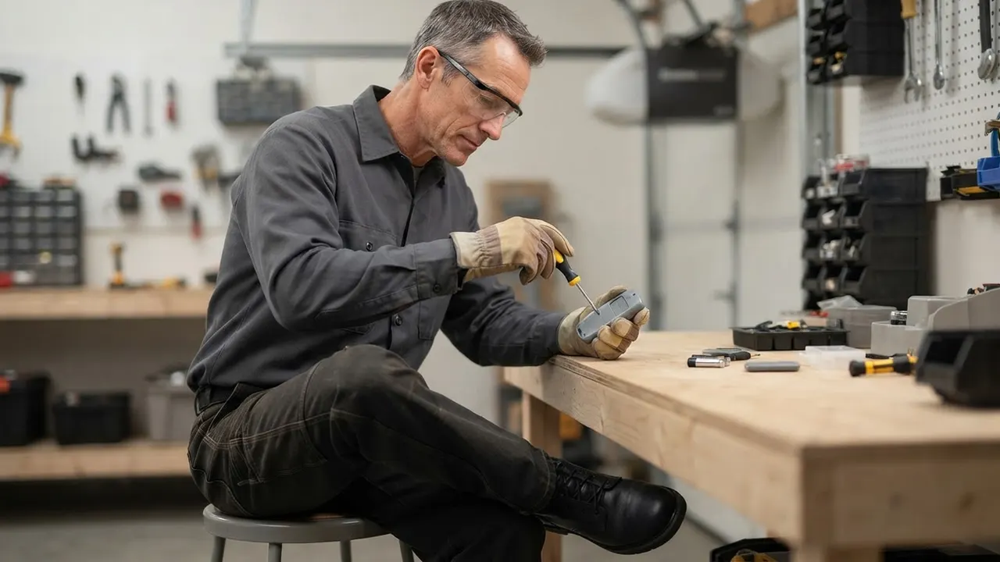
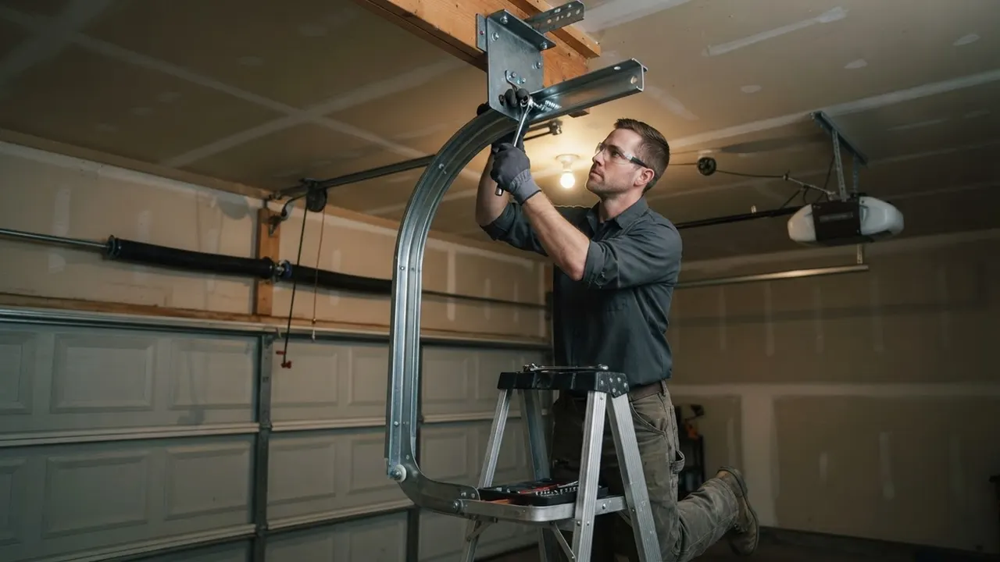
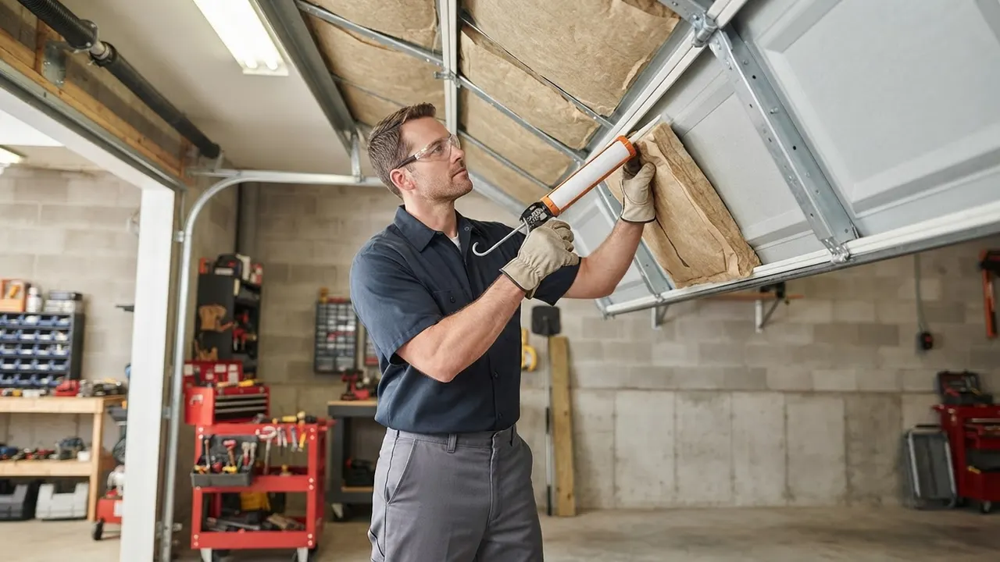

Same-Day Garage Door Repair
Same-Day Garage Door Repair in Wilmington, DE
Same-Day Garage Door Repair in Wilmington means a real technician at your door, not a callback next week. We handle broken torsion springs, snapped cables, dead opener motors, and doors stuck half-open in Trolley Square, the East Side, and Southbridge. Call (302) 556-5080 and we roll a stocked truck to your address today.
Service overview
Same-Day Garage Door Repair in Wilmington
Same-Day Garage Door Repair in Wilmington is the service that gets a stuck, broken, or unsafe garage door working again before the day ends. A technician arrives with torsion springs, galvanized steel cables, nylon rollers, hinges, and track brackets on the truck, diagnoses the failure, and completes the repair in one visit. Most jobs - spring swaps, cable replacements, roller and hinge work, sensor realignment - finish in two to four hours. No waiting on a parts order, no second appointment.
Wilmington doors take a beating. Winter salt off I-95 and Route 202 chews through bottom seals, and the freeze-thaw cycle from December through March cracks hinges and stiffens rollers. Summer humidity swells wooden jambs in older neighborhoods like Forty Acres and Wawaset Park, throwing doors off track. When your door quits on a Tuesday morning with two cars trapped inside, a same day garage door service Wilmington DE call is the difference between a normal day and a lost one.

Practical benefits
Why Wilmington Homeowners Call Us First
A garage door failure is not a wait-until-next-week problem. It is a security problem, a safety problem, and often a can't-leave-the-driveway problem. Here is what a same-day call actually gets you.
Repaired The Same Day
We stock torsion springs, extension springs, cables, rollers, and opener gears on every truck, so roughly 9 out of 10 calls are finished in a single visit. Average on-site time runs two to four hours. You are not waiting three days for a part to ship while your car sits in the driveway.
Licensed And Code-Correct
Every repair follows UL 325 safety standards and ANSI/DASMA 102 guidelines, with photo-eye sensors tested and force settings recalibrated before we leave. We hold a Delaware contractor license and carry full insurance. Your door does not just open again - it opens safely.
Upfront Pricing, No Surprises
You get the price before we start. A standard spring replacement runs $250 to $450 installed; a cable and roller refresh runs $180 to $350. No trip charges inside New Castle County, no after-hours surcharge on standard weekday calls, and no pressure to buy a new door when a $60 part fixes it.
16 Years On Wilmington Doors
We have been fixing garage doors in Wilmington since 2010. That is 16 years of LiftMaster, Chamberlain, Genie, and Craftsman openers, Clopay and Amarr panels, and the particular rust that comes off Delaware's coastal air. We have seen your exact failure before, usually that same week.
How service works
How Our Same-Day Repair Works
From your first call to a door that closes quietly, here is exactly what happens - and how fast.
STEP 01
Call And Describe
You call (302) 556-5080 and tell us what the door is doing - hanging crooked, stuck open, making a bang, or dead silent. Two minutes on the phone usually tells us whether it is a broken torsion spring, a snapped cable, or an opener failure. We quote a realistic arrival window, not a four-hour block.
Tools and methods
Tools And Methods We Use
Winding Bars
The only safe tool for winding and unwinding torsion springs. We never use a screwdriver or a punch - that is how technicians get hurt and how springs get damaged on installation.
C-Clamps And Vise Grips
Used to lock the door in place on the track before we release tension on the springs or cables. Standard safety practice on every spring and cable job.
Socket Wrench Set And Power Drill
For removing and reinstalling hinges, brackets, drums, and opener hardware. Cordless drills with the right bits speed up panel and bracket work without stripping fasteners.
Tape Measure And Level
Used to check track alignment, door square, and panel spacing. A door that is a quarter-inch out of square will bind and wear rollers fast.
Rubber Mallet And Screwdriver Set
For reseating panels, tapping track brackets back into alignment, and adjusting opener travel limits without damaging the door or the hardware.
Safety Glasses And Gloves
Worn on every spring and cable job. Torsion springs store enough energy to send fragments across the garage if something fails during the repair.
LiftMaster And Chamberlain Diagnostic Tools
For reading opener fault codes, checking travel limits, and confirming force settings on LiftMaster, Chamberlain, Genie, Craftsman, Linear, Marantec, and Sommer units.
UL 325 Safety Standard Compliance
Every door we touch is tested against UL 325 for auto-reverse, photo-eye sensor function, and force limits. If your door predates modern safety standards, we bring it up to code during the repair. This is non-negotiable on every job.
ANSI/DASMA 102 Installation Guidelines
We follow ANSI/DASMA 102 for door installation and repair tolerances - track alignment, spring tension, and hardware torque. Following the standard is why our repairs last instead of failing in a few months.
Matched-Pair Spring Replacement
Torsion and extension springs are always replaced in matched pairs, never one at a time. A new spring paired with a worn one will fail early and unbalance the door. This is a standard we do not break, even when a customer asks to save money on one spring.
Cable And Drum Inspection On Every Spring Job
When we replace a spring, we inspect the cables and drums. A grooved drum or a frayed cable will fail within weeks of a spring replacement if it is not addressed at the same time. We quote it, you decide, but we always check.
Post-Repair Balance And Cycle Test
Every repaired door is cycled a dozen times and checked for balance - a properly balanced door stays put halfway up. If it drifts, the springs are not tensioned correctly and we adjust until they are.

Where this service fits
When To Call For Same-Day Service
Spring snapped on a weekday morning with two cars trapped in the garage and a commute to make.
Call (302) 556-5080 first thing. We prioritize trapped-vehicle calls and can usually be on site within a few hours. The technician replaces both torsion springs, rebalances the door, and tests it before leaving. You are back on the road the same day, usually by early afternoon, with a door that lifts smoothly instead of straining.
Door came off the track on a Friday afternoon before a weekend trip, hanging crooked and blocking the driveway.
We treat off-track doors as priority calls. The technician reseats the rollers, straightens the track brackets, and checks the cables and springs for the underlying cause. Most off-track repairs finish in two to three hours. The door is back on track and closing properly before the weekend, and you are not leaving a crooked door hanging over your car for two days.
Opener died on a Sunday evening - motor hums, door does not move, and you cannot get the car out for Monday.
We run emergency calls throughout Wilmington and New Castle County. The technician diagnoses the opener, replaces the stripped gear or failed logic board from truck stock, and tests the travel limits and safety reverse. You leave for work Monday morning with a working door instead of a rental car and a repair appointment three days out.
Door has been getting louder and shakier for weeks, and now it shrieks loud enough to wake the neighbors.
That is worn steel rollers and dry hinges, not a failing door. We swap the rollers for nylon, lubricate the hinges and springs, and check the track alignment. Most roller and hinge jobs run about two hours. The door runs quiet again, and you avoid the emergency call that was coming in another month or two.
You are selling the house and the buyer's inspector flagged the garage door as failing the auto-reverse test.
We come out, test the door against UL 325, and fix whatever is failing - usually sensor alignment, force settings, or a worn bottom seal. We document the repair so you can hand the report to the buyer. The inspection item is cleared the same day, and the sale keeps moving without a renegotiation over the garage door.
Local execution
How Same-Day Repair Runs In Wilmington
Wilmington garage doors fail in patterns that are specific to this area. The freeze-thaw cycle from December through March is the biggest driver - water gets into hinge pivots and roller bearings, freezes overnight, and cracks the metal. Road salt off I-95 and Route 202 accelerates corrosion on bottom seals, cables, and track brackets. Summer humidity swells wooden jambs in older neighborhoods like Forty Acres and Wawaset Park, throwing doors out of square. We see the same failures repeat across the city, which is why our trucks carry the parts that actually fail here. If you are searching for same day garage door service in Wilmington, Delaware, we can usually tell you what is wrong from your description before we arrive. Older homes in the East Side and Trinity Vicinity often have original wooden doors with extension springs - a different repair than the torsion systems in newer construction. Commercial roll-ups on the Riverfront and along Market Street need priority scheduling because a stuck door means a closed business. We run same-day calls across all of it, from 19802 to 19809, and we know which neighborhoods have which door types before we pull up.
Trolley Square
Mix of older rowhouses and renovated homes with a lot of original wooden garage doors. Extension spring systems are common here, and hinge and roller wear is the usual failure.
East Side
Older housing stock with narrow driveways and tight clearances. Off-track doors are common because there is less room to maneuver, and track brackets take a beating.
Riverfront
Newer construction and commercial properties with modern sectional doors and LiftMaster operators. Commercial roll-ups need fast turnaround because a stuck door closes a business.
Forty Acres
Established neighborhood with a mix of steel and wooden doors. Summer humidity swells the wooden jambs and throws doors out of square, causing binding and roller wear.
Southbridge
A lot of 1990s and 2000s construction with torsion spring systems. Spring failures are the most common same-day call here, especially after a cold snap.
Freeze-thaw cycles from December through March
Water gets into hinge pivots and roller bearings, freezes, and cracks the metal. This is the single biggest driver of winter same-day calls in Wilmington, and it is why we stock hinges and rollers year-round.
Road salt off I-95 and Route 202
Salt spray accelerates corrosion on bottom seals, galvanized cables, and track brackets. Doors near the highway need cable and bracket inspection more often than doors further out.
Summer humidity swelling wooden jambs
Older wooden doors in Forty Acres and Wawaset Park swell in July and August, throwing the door out of square and causing binding on the track. Often fixed with hinge adjustment and track realignment.
Coastal air and salt corrosion
Wilmington's proximity to the Delaware Bay means higher airborne salt than inland areas. Steel rollers and cables corrode faster here, which is why we recommend nylon rollers on most Wilmington doors.
Problems we solve
Common Garage Door Problems We Fix Same Day
Most same-day calls in Wilmington fall into a handful of failure modes. Here are the ones we see most, what happens if you ignore them, and how we fix them.
Broken torsion spring - door will not lift
We replace both torsion springs with matched pairs, wind them with proper winding bars, and rebalance the door. Most spring jobs take 90 minutes to two hours. Running the opener on a broken spring is how a $300 repair becomes an $800 one. The door is dead weight, often 150 to 250 pounds. Forcing the opener burns out the motor and can snap a cable. You cannot get a car out, and the door is stuck in whatever position it failed.
Snapped cable - door hangs crooked
We replace both galvanized steel cables, reset the cable drums, and inspect the springs for the wear that caused the failure. Cable jobs usually run about two hours. We also check the drums - a grooved drum will fray a new cable in weeks. One side of the door drops, the panels bind, and the door can come off the track entirely. Operating it in this state risks a panel dropping on a car or a person.
Door off track after a bump
We stop running the opener, reseat the rollers, straighten the track brackets, and check the cables and springs for the cause. Most off-track doors are back on track the same day. If a bracket is bent beyond saving, we have replacements on the truck. Rollers jump the track, the door binds, and the opener strains. Continuing to run it grinds the rollers flat and bends the track brackets, turning a quick reseat into a full track replacement.
Opener hums but door does not move
We open the gear case, confirm the stripped gear, and replace the gear and sprocket kit on Chamberlain, LiftMaster, and Craftsman units. Most gear repairs are done in under two hours. If the motor itself is gone, we quote a replacement on the spot. A stripped nylon gear or failed logic board leaves the motor running with no travel. The opener overheats, the gear case fills with nylon shavings, and the unit eventually dies completely.


A practical standard for every visit.
Clear planningPrepared arrivalsCareful workLocal follow-through
Experience in the details
16 Years Fixing Wilmington Garage Doors
Delaware Express Garage Door Service has been repairing and installing garage doors in Wilmington since 2010 - 16 years of torsion spring swaps, cable replacements, opener diagnostics, and off-track recoveries across New Castle County. Our technicians are trained on LiftMaster, Chamberlain, Genie, Linear, Marantec, and Sommer systems, and we follow DASMA and UL 325 standards on every job. We have worked on 1920s carriage-house doors in Wawaset Park, 1990s steel doors in Pike Creek subdivisions, and commercial roll-ups on the Riverfront. That range matters when your door fails - we have seen the failure mode before and we know the fix.

Where we work
One local team. A lot of ground covered.
Downtown WilmingtonRiverfrontThe HighlandsTrolley SquareForty AcresBaynard VillageWawaset ParkCool SpringTrinity VicinityBrowntownLittle ItalyUnion Park Gardens
Check my address Notes from local customers
What Wilmington Customers Say
Torsion spring snapped on a Wednesday morning with both cars inside. Called at 8:30, tech was here by 11, door was working by 1. He showed me the cracked spring, quoted the price up front, and replaced both springs instead of just the broken one. No upsell, no mess left behind. Exactly what a same-day call should be.
Our door came off the track on a Friday and was hanging crooked. I was worried it would be a weekend of waiting. They came out the same afternoon, reseated the rollers, straightened the track, and replaced a bent bracket. Two hours and it was running smoother than before. Fair price and they explained everything.
I manage a few rental units near the Riverfront and use these guys for every garage door issue. Last call was a dead LiftMaster opener at one of the units - they diagnosed a stripped gear, had the part on the truck, and had it fixed the same day. Tenants were happy, I was happy. That is why I keep calling.
Yes - in most cases we can be at your Wilmington address the same business day you call. Call (302) 556-5080 before early afternoon and we can usually schedule a same-day visit. Spring, cable, roller, and opener repairs are the most common same-day jobs, and our trucks carry those parts so the work is finished in one trip.
Typical 2026 pricing in Wilmington runs $180 to $450 for most residential repairs. A torsion spring replacement is $250 to $450 installed; a cable and roller refresh is $180 to $350; opener gear or logic board work is $200 to $400. You get the price before we start, and there is no trip charge inside New Castle County.
Delaware Express Garage Door Service does - we have been repairing Wilmington doors since 2010 and run same-day calls throughout New Castle County, including Downtown Wilmington, Trolley Square, the East Side, and Southbridge. Call (302) 556-5080 and we will give you a real arrival window, not a vague all-day block.
Most repairs take two to four hours on site. A broken torsion spring is usually 90 minutes to two hours. A snapped cable with drum reset runs about two hours. Off-track recovery and opener replacements can run three to four hours. From your call to a working door, most Wilmington customers are back in business the same day.
Keep exploring
Related Services
Your next step is waiting
Need Same-Day Garage Door Repair in Wilmington?
Call (302) 556-5080 and tell us what your door is doing. We will give you a real arrival window, a price before we start, and a door that works before we leave. Licensed, insured, and running Wilmington calls since 2010.
Start with the basics
Call For Garage Door Service
Call (302) 556-5080 and tell us what your door is doing. We answer during business hours and run emergency calls after hours. Most days we can get a tech to you the same day, and we will give you a window, not a maybe.